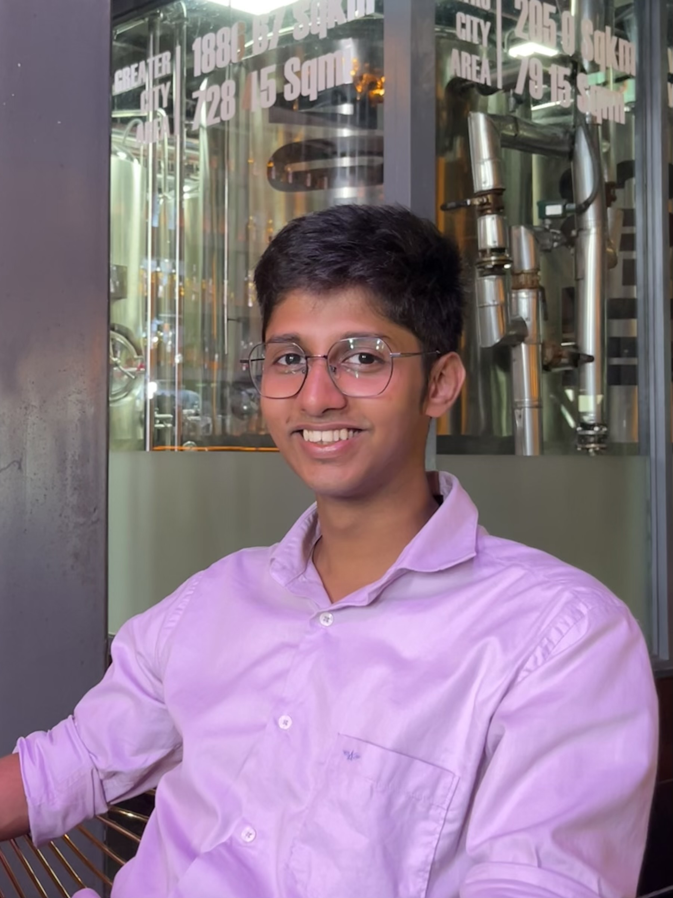

Aug 2026 – Present
PhD, Materials Science & Engineering
Nanyang Technological University, Singapore
Light-matter interaction of chiral metasurfaces. Supervisor: Prof. Prashant Kumar.

PhD Student · Materials Science & Engineering
Studying the light–matter interaction of chiral metasurfaces at Nanyang Technological University, Singapore.
I'm a PhD student in the Department of Materials Science and Engineering at Nanyang Technological University (NTU), working on the light-matter interaction of chiral metasurfaces. I completed my integrated BS-MS in Physics at IISER Kolkata, where my thesis focused on enhancing chiroptical signals in nanoparticles via structured light. I'm passionate about bridging nanophotonics, chiral optics, and computational electromagnetics. Apart from academics, I never miss an opportunity for an evening of football, and I play fingerstyle guitar and volunteer in my free time.
Aug 2026 – Present
Nanyang Technological University, Singapore
Light-matter interaction of chiral metasurfaces. Supervisor: Prof. Prashant Kumar.
Aug 2021 – May 2026
IISER Kolkata · CGPA 8.1
Thesis: Enhancement of chiroptical signals for nanoparticles via structured light beams. Supervisor: Prof. N. Ghosh, Bio-NaP Lab.
Selected for the SRFP 2024 program.
National-level screening test for admission to PhD and Integrated PhD programs at premier Indian research institutions.
Aug 2026 –
Present
Light-Matter Interaction of Chiral Metasurfaces
Jan 2025 –
May 2026
Interaction of Nanoparticles in Chiral Host Media
Darkfield Microscopy
May 2024 –
Jul 2024
May 2023 –
Jul 2023
Oct – Dec 2024
Jan – May 2024
Jan 2024
2020
Aug 2025 – Dec 2025
IISER Kolkata
Assisting second-year undergraduates in the Modern Physics and Optics laboratory course:
Selected reports, term papers, and certificates from coursework, fellowships, and workshops — click any title to open the original document.